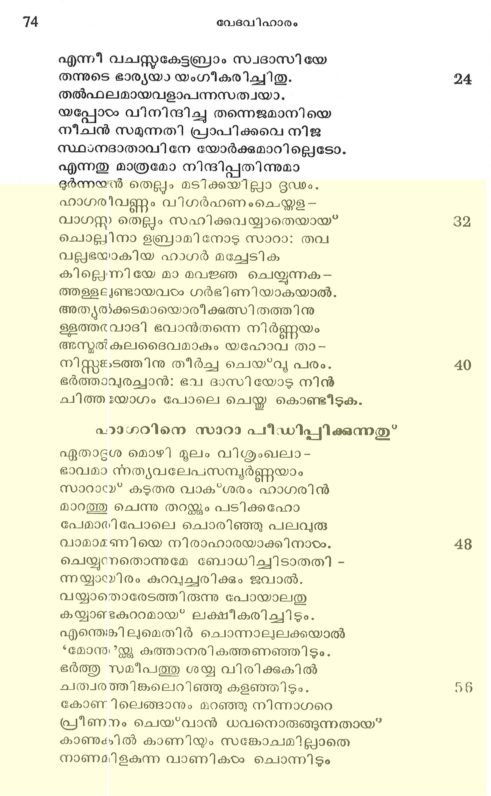

ഹാഗര് അബ്രഹാമിനു ഭാര്യയായിത്തിരുന്നതു*
സൃന്തതിക്കള്ളഭിവൃദ്ധി പുരസ്കരി -
ചന്തര്ഹിതാത്മാവമലന് പലവ
ഗംഭീരമാകും പ്രതിജ്ഞ ചെയ്തീടീലും
സംഭവിച്ിലതു പത്താണ്ടുകഠംവരെ.
ഇക്കാരണത്താല് മനസ്സ തളര്ന്നുത-
നനുടംക്കള നാഥനോടോതിനാടം സാരയും.
ഇത്രനാടം കാത്തങ്ങിരുന്നീടിലുമൊരു
പുത്രനുണ്ടാവാനുദിച്ചില്ച യോഗവും. 8
ആത്തിയേോറുന്ന നിലയിതിലെത്രനാടം
പാത്തിരിക്കേണം വിഫലീകൃതാശനായ്.
ഈശ്വരന് മാമക ഗര്ഭം തടുക്കയാ--
ലീവിധം കഷ്യമനുഭൂരതമായി മേ.
എന്തിന്നതോര്ത്തു വിലപിച്ചിടുന്നു ഞാന്
ഹന്ത! ദൈവേച്ഛ മറിച്ചുവയ്യാവതോ ?
ആപത്തിലായാല് വി മോചനചിന്തതാ--
നാവശ്യ, മെന്തു പരിദേവനത്തിനാല് ? 16
ഞാനിങ്ങു നോക്കിയിട്ടണ്ടൊരു മാഗ്ശവം
മാനിയായ്കകേരു മയോഗ്യമായി ബ*ഭവാ൯.
മിസ്രരദേശക്കാരിയാകിയ ഭൂത്യയേ
നിന്ദ്രപത്വേന പരിഗ്രഹിച്ചീടുക.
ആയവരംമാര്ഗ്ഗ മപത്യമുണ്ടായ*വരു
മായതിയേവം സുഭഗമായ*ത്തീര്ന്നിടും.
എന്നീ വചസ്സകേട്ടബ്രാം സ്വദാസിയേ
തന്നുടെ ഭാര്യയാ യംഗീകരിച്ചിതു.
തല്ഫലമായവളാപന്നസത്വയാ.
യപ്പോഠം വിനിന്ദിച്ചു തന്നെജമാനിയെ
നീചന് സമുന്നതി പ്രാപിക്കവെ നിജ
സ്ഥാനദാതാവിനേ യോര്ക്കുമാറില്ലെടോ.
എന്നതു മാത്രമോ നിന്ദിപ്പതിന്നുമാ
ഭള്നയ്റ്റ തെല്ലം മടിക്കയില്ലാ ദൂൃഡം.
ഹാഗരീവണ്ണം വിഗര്ഹണംചെയ്തള --
വാഗസ്ത് തെല്ലം സഹിക്കവയ്യാതെയായ*
ചൊല്പിനാ ഉബ്രാമി നോടു സാറാ: തവ
വല്പഭയാകിയ ഹാഗര് മച്ചേടിക
കില്ലെന്നിയേ മാ മവജ്ഞ ചെയ്യുന്നക-
ത്തള്ളലുണ്ടായവരഠം ഗര്ഭിണിയാകയാല്.
അത്യല്ക്കടമായൊരീക്കുത്സിതത്തിനു
ളളത്തരവാദി ഭവാ൯തന്നെ നിര്ണ്ണയം
അനുല്കുലദൈവമാകും യഹോവ താ-
നിസ്ത്ങ്കടത്തിനു തീര്ച്ച ചെയ്വു പരം.
ഭര്ത്താവുരച്ചാന്: ഭവ ദാസിയോടു നിന്
ചിത്തയോഗം പോലെ ചെയ്ത കൊണ്ടിീടുക.
ഹാഗറിനെ സാറാ പീീഡിപ്പിക്കുന്നതു*
ഏതാദൃശ മൊഴി മൂലം വിശുംഖലാ-
ഭാവമാ ന്നത്യവലേപസമ്പൂര്ണ്ണയാം
സാറായ്? കടുതര വാക*ശരം ഹാഗരിന്
മാറത്തു ചെന്നു തറയ്ക്കും പടിക്കഹോ
പേമാരിപോലെ ചൊരിഞ്ഞു പലവുരു
വാമാമണിയെ നിരാഹാരയാക്കിനാടം.
ചെയ്യുന്നതൊന്നുമേ ബോധിച്ചിടാതതി -
ന്നയ്യായിരം കുറവുച്ചരിക്കും ജവാല്.
വയ്യാതൊരേടത്തിരുന്നു പോയാലതു
കായ്യാണ്ടകുററമായ? ലക്ഷീകരിചിിടും.
എന്തെങ്കിലുമെതിര് ചൊന്നാലുലക്കയാല്
*മോന്ത്്ന്ക്കു കുത്താനരികത്തണഞ്ഞിടും.
ഭര്ത്തു സമീപത്തു ശയ്യ വിരിക്കുകില്
ചത്വരത്തിങ്കലെറിഞ്ഞു കളഞ്ഞിടും.
കോണിലെങ്ങാനും മറഞ്ഞു നിന്നാഗറെ
പ്രീണനം ചെയ്വാന് ധവനൊരുങ്ങുന്നതായ"
കാണുകില് കാണിയും സങ്കോചമില്ാതെ
നാണമിളകുന്ന വാണികടം ചൊന്നിടും

മന്ദസ്മിതം തൂകിയെന്നു കേസുണ്ടാക്കി--
യന്നു പാത്രങ്ങഠം തകര്ക്കും പരാക്രമി
വന്നര വെളപ്പിച്ചുടക്കകില് €നോക്കവംഠം
ക്കഠംത്തിങ്ങിടും ഡംഭ?മെന്നു ജല്ിച്ചിടും
കൂട്ടരേ! കോഠാക്കുവിന് വീട്ടുകാരന് പുരാ
ചേട്ടയാകും ചെറുപെണ്ണിനെ ക്കൊണ്ടന്നു
പാട്ടില് നിറുത്തിയ കാരണത്താൽ മമ
വീട്ടിന്നധികാരിയായ* വന്നവളിതാ
തട്ടിയെടുത്തു മനസ്സ മറിക്കയാ-
ലിഷ്ടയമയാടംക്കു ജനിച്ചവളില് തുലോം.
കുട്ടിയുമാ യെന്നഹംകരിച്ചു മമ
തടുകേടുണ്ടാക്കുവാനൊരുങ്ടുന്നി താ
ഭുഷ്മയിവളടെ വാക്ക് വിടൊന്നുമേ
ചേഷ്യയില്ലാനരന്നെന്നു ബോധിക്കണം..
ഹാഗര് കരഞ്ഞാലയാളം കരഞ്ഞിടും
ഹാഗര് ചിരിച്ചാലയാളം ചിരിച്ചിടും
ഹാഗറെ ഞാനൊന്നു ശാസിക്കിലെന്നുടെ
ഹാ! ഗളം ഞെക്കാനൊരുങ്ങും നിരങ്കശം
പെണ്ണിന്നടി മയായ്ത്തീര്ന്നുള്ള മര്ത്യനു
തിണ്ണെന്നകപ്പെടും ദണ്ഡങ്ങളെന്നുള്ള
നിര്ണ്ണയവാക്കു ശരിയായ ധരിക്കുവാന്
കണ്ണറിവില്ലാ ഗൃഹപതി ഒ്ക്കൊട്ടമേ.
ഇത്ഥ മയലത്തു കോടുക്കുംവിധം വിളി -
ചത്യധികോച്ചമായ* ഘോഷിച്ച തന്നുടെ
പലം കടിച്ചൊരു രാക്ഷസി ജ്ലൊപ്പുമായ”
കൊല്ലാക്കുല ചെയ്ത സാറായി മേവിനാരം.
ഹാഗറിന്െറ ഓടിപ്പോക്കു”
ഇക്കഠോരക്രിയ സഹ്യമല്ലാതെയാ ൦
മുഭ്ധ വി ലോചന വീടുവിട്ടോടവേ
യാഹ്വയിന് ഭൂതനവാംക്കു പ്രത്യക്ഷനാ-
യാഹ്വയം ചൊല്ലി വിളിച്ചു തദ്വാര്ത്തക-
ളാകരണ്ണനം ചെയ്തശേഷം വദിചിതുഃ:
ശോകം കളക നിന് സന്താന വല്രി
പുത്തു ഫലിച്ചതിന് കായ്ക്കരം പരിണതാ -
വസ്ഥയിലെത്തി പ്പൊഴിയും വിധമഹോ!
സംഖ്യേയമല്ലാത്ത മട്ടിലഭി ൮ൃദ്ധി
തങ്കുന്നതാക്കി സ്ഥിരീകരിക്കും; തവ
ഗര്ഭസ്ഥനാം ശിശു പത്ര സന്താനമാ-൦
ണര്ഭകനാമവന്നിഷ*മയേലെന്നു പേര
തജ്ജന്മശേഷം കൊടുക്ക യഹോവ നി -
ന്നുച്രുദിതം ശ്രവിക്കുക കാരണം.
കാട്ടുകഴുത തുല്യനാകുമവന്
നീട്ടംകരം സമസ്മര്ക്കും വിരുദ്ധമായ്.
നീട്ടമവരു മവന്നെതിരായ്' കരം
പാക്കമവന് സോദരക്കെതിരാം ദിശി.
ആകയാല് ഹാഗറേ! സ്വാമിനി തന്നരി -
കാമയമെന്യേ ഗമിച്ചു വശംവദ--
യായിരിക്കായവംം ക്കെന്നു ചൊന്നാനന്ദ -
ദായിയാം ഭൂതകന് മാറി മറഞ്ഞിതു.
സുപ്രസന്നോദയനാകിയ ദേവനേ
വിഭ്രമവേളയില് കണ്ടാശ്വസിക്കയാല്
ഉടംക്കമലം തെളിഞ്ഞുല്ബദ്ധചിത്തയായ്
നിഷ*കളങ്കാദരമോതിനാടം ഹാഗറും.
€മ ദര്ശകനാകു മീശ്വരനത്രാപി
മദ്ൃഷ്മികഠംക്കു വിഷയമായത്ഭുതം !?
തല്ക്കാരണാദ* “വിഭോ! മാംപശ്യസീ? തി,ദി-
വ്യാഖ്യനല്കീടിനാടം യാവിന്നുപാവനീ
തേനൈവ “ബീയര്ലഹായി രോയി ?തൃഭി-
ധാനംലഭിച്ചാ മരുവിന് കിണററിനും
അത്ഥം, *സ്വയം ജീവിമദ്ദര്ശകന് വക
യത്രെയിക്കൂപ *?മിതുതാന് ബേരേദിനും
കാദേശിനു മിടന്ക്കുള്ള തനന്തരം
ഹാഗര് സവിച്ചമകന്നിഷ*മയേലിതി
പേരേകി യെണ്പതോടാറുവയസ്സള്ള
സാരാവഗാഹിയാമബ്രാം മുദാന്വിതം.